Build an Awesome Raspberry Pi NAS for Home Media Streaming
Network Attached Storage (NAS) provides data access to a heterogeneous group of clients over computer networks. As hard drive prices continue to drop, NAS devices have made their way into the homes of the masses. Leading brands in the SMB and home NAS market, such as Synology, have their products range in price from as low as ﹩300 to ﹩700 for the high models. But if you are a Raspberry Pi player, you can build a very nice home NAS and streaming service for only about half the cost of the lowest price.
This blog records the whole process of building a Raspberry Pi NAS and home media server, including project planning, system implementation, and performance review. It also covers some important experiences and lessons that could hopefully benefit anyone interested in this DIY project.
Project Planning
Raspberry Pi 4B features an upgraded 1.8GHz Broadcom BCM2711（quad-core Cortex-A72）processor and onboard RAM up to 8GB. It includes two new USB 3.0 ports and a full-speed Gigabit Ethernet interface. The power supply is also updated to a USB-C connector. All these greatly improve system throughput and overall comprehensive performance, and we can use them to create a full-featured home NAS. 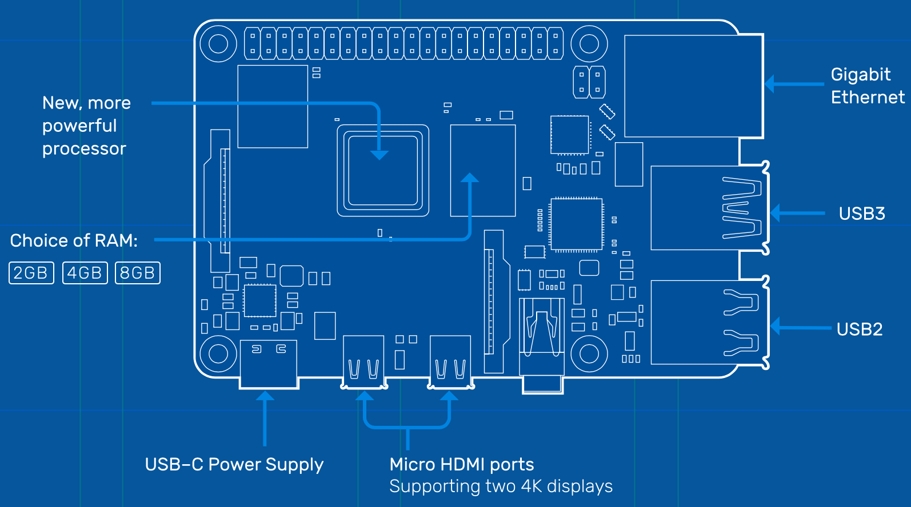
For NAS system software, OpenMediaVault (OMV) is a complete NAS solution based on Debian Linux. It is a Linux rewrite of the well-known free and open-source NAS server system FreeNAS (based on FreeBSD). The salient features of OMV are
- Simple and easy-to-use out-of-the-box solution, no need for expert-level knowledge of computer networking and storage systems
- Available for x86-64 and ARM platforms with a full Web Administration interface
- Supports a variety of different protocols (SFTP、SMB/CIFS, NFS, etc.) for file storage access
- Can be controlled via SSH (if enabled), and provides Access Right Management for users and groups
While primarily designed for home environments or small home offices, OMV's use is not limited to those scenarios. The system is built on a modular design. It can be easily extended with available plugins right after the installation of the base system. OMV is the NAS server system software we are looking for.
The NAS system with media playback services provides an excellent audio/video-on-demand experience in a home network environment. Plex Media Server software integrates Internet media services (YouTube, Vimeo, TED, etc.) and local multimedia libraries to provide streaming media playback on users' various devices. The features of Plex for managing local libraries are
- Centralized management and easy sharing of a single library
- Web interface with media resource navigation, streaming playback
- Real-time saving and resuming of playback progress
- Multi-user support and hierarchical playback rights settings
The Plex Media Server software itself is free and supports a wide range of operating systems, making it ideal for integration with home NAS.
These cover all the software needed for our NAS project, but they are not enough for a complete NAS system. We also need a preferred case, otherwise, the Raspberry Pi NAS will only run bare metal. Although there are many cases available in the market for Raspberry Pi 4B, as a NAS system we need a case kit that can accommodate at least 1-2 internal SSD/HDD and must also have a good heat dissipation design.
After some review and comparison, we chose Geekworm's NASPi Raspberry Pi 4B NAS storage kit. NASPi is a NUC (Next Unit of Computing) style NAS storage kit designed for the latest Raspberry Pi 4B. It consists of three components:
- X823 shield board, which provides storage function for 2.5-inch SDD/HDD
- X-C1 adapter board, which adjusts all Raspberry Pi 4B interfaces to the back of the case and provides power management and safe shutdown function
- Temperature-controlled PWM (Pulse-Width Modulation) fan as the cooling system
All these components are packed into a case made of aluminum alloy with an anodized surface.
Thereon our NAS project can be planned with the following subsystems:
- Hardware System:
- Raspberry Pi 4B 8GB RAM
- 32GB microSD for OS storage
- NASPi NAS storage kit
- 15-20W USB-C power adaptor
- 500GB internal SSD（USB 3.0）
- 2TB external HDD（USB 3.0）
- Software System:
- Raspberry Pi OS Lite（with no desktop environment）
- OMV for NAS file server
- Plex media server providing streaming service
It is important to note that NAS servers are generally headless systems without a keyboard, mouse, or monitor. This poses some challenges for the installation, configuration, and tuning of hardware and software systems. In practice, as described in the next section, we run an SSH terminal connection to complete the basic project implementation process.
System Implementation
The execution of this project was divided into four stages, which are described in detail as follows.
Prepare Raspberry Pi 4B
In the first stage, we need to prepare the Raspberry Pi OS and do some basic unit tests. This is important, if we delay the OS test until the entire NSAPi kit is assembled, it will be troublesome to find problems with the Raspberry Pi then.
Bake Raspberry Pi OS
First, insert the microSD card into the USB adapter and connect it to the macOS computer, then go to the Raspberry Pi website and download the Raspberry Pi Imager software to run. From the application screen, click CHOOSE OS > Raspberry Pi OS (other) > Raspberry Pi OS Lite (32-bit) step by step. This selects the lightweight Raspberry Pi OS that does not require a desktop environment, and then click CHOOSE STORAGE to pick the microSD card.
Next is a trick - hit the ctrl-shift-x key combination and the following advanced options dialog box will pop up 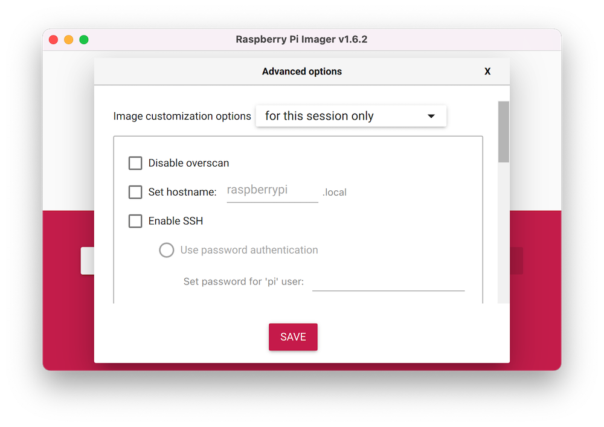 Here is exactly the option we need to enable SSH on boot up - Enable SSH. It also allows the user to pre-set a password for the default username pi (default is raspberry). Once set up, click SAVE to return to the main page and then click WRITE to start formatting the microSD card and writing OS to it. When finished, remove the microSD card and insert it into the Raspberry Pi, connect the Ethernet cable then power it up.
Probe IP Address
At this point we encountered a problem: since the installed system does not have a desktop environment, it cannot connect to the keyboard, mouse, and monitor, so how do we find its IP address? There are two ways:
- connect to the home router's management WebUI and find the address for the hostname 'raspberry'.
- run the Nmap tool to scan the target subnet and check the changes before and after the Raspberry Pi boots up
The log of the Nmap tool run can be seen below. Notice that a new IP address 192.168.2.4 is showing up in the scan report. Rerunning Nmap against this address alone, we saw that TCP port 22 was open. We could roughly determine that this might be our newly online Raspberry Pi:
1 | ❯ nmap -sn 192.168.2.0/24 |
System Update and Upgrade
Next, try SSH connection
1 | ❯ ssh pi@192.168.2.4 |
Once confirmed, we executed the following commands in the Raspberry Pi to update and upgrade the system:
1 | pi@raspberrypi:~ $ sudo apt update && sudo apt upgrade |
Network Connectivity Test
This stage concluded with the stability test of the Raspberry Pi 4B system Ethernet connection. The test was executed on a macOS computer using the simple ping command, setting the -i 0.05 option to specify 20 packets per second and the -t 3600 option for one hour run
1 | ❯ sudo ping -i 0.05 192.168.2.4 -t 3600 |
There should be no more than 1% packet loss or timeout on a subnet with no wireless connectivity, otherwise, it should be checked for troubleshooting. As a matter of fact, in our test, it was happening that nearly 10% of ping packets got lost and the SSH connection dropped intermittently. Searching the Internet, we found that there have been quite a few reports of similar issues with the Raspberry Pi 4B Ethernet connection. The analysis and suggestions given by people on the relevant forums focus on the following
- Unstable power supply accounts for packet loss, and needs to be replaced with a reliable USB-C power adapter of 15W or more.
- Energy-efficient Ethernet (Energy-Efficient Ethernet) malfunction, can be fixed by disabling it.
- The full-speed Gigabit Ethernet connection function is faulty and has to be downgraded to 100Mbit/s for stable use.
Practically, we tried all of the above with little success. Later, we found that the home router connected to the Raspberry Pi 4B was a Belkin N750 DB made in 2011. Although it provides Wi-Fi dual-band 802.11n and 4 Gigabit Ethernet ports, the manufacturing date is too long ago, which makes people doubt its interoperability. Also points 2 and 3 of the above report are essentially interoperability issues. Thinking of these, we immediately ordered the TP-Link TL-SG105 5-port Gigabit Ethernet switch. After receiving it, we extended the Gigabit Ethernet port of N750 with TL-SG105, connected Raspberry Pi 4B to TL-SG105, and retested it. Sure enough, this time the ping packet loss rate was less than 0.1% and the SSH connection became solid.
The conclusion is that the Raspberry Pi 4B Gigabit Ethernet interface may have compatibility issues with some older devices, which can be solved by inserting a desktop switch with good interoperability between the two.
NSAPi Kit Assembly
In the second stage, we assembled the NSAPi storage kit, intending to finish all hardware installation and complete the standalone NAS body.
Prepare Internal SSD
The NSAPi supports either an internal SSD or HDD. The project picked a Samsung 870 EVO 500GB internal SSD, here we ought to first make sure the SSD works properly on its own, otherwise, we would have to disassemble the NASPi to replace it. The SSD can be hooked up to Windows for file systems and basic read/write operation checks. In the case of a newly purchased SSD, the following steps can be done on Windows to quickly format it:
- Click on Start or the Windows button, select Control Panel > System and Security
- Select Administrative Tools > Computer Management > Disk management
- Choose the disk to be formatted, right-click then select Format
- Check the following in the Dialog box pop-up
- File System → NTFS
- Allocation Unit Size → Default
- Volume Label → (enter volume name)
- Perform a quick format
- Click the OK button to start a fast format for the SSD
⚠️Note: Here the chosen file system is NTFS. OMV supports NTFS mounting and reads/writes.
PWM Fan Control
Before the actual hardware assembly, a special software provided by Geekworm - PWM fan control script - must be installed. PWM fan speed adjustment to temperature change is a major feature that lets NASPi stand out from other hardware solutions. So this step is critical.
Referring to Geekworm's X-C1 software wiki page, the installation command sequence on the SSH session connected to the Raspberry Pi 4B system is as follows
1 | sudo apt-get install -y git pigpio |
If you can't do git clone directly on Raspberry Pi 4B, you can first download the X-C1 software on the SSH client, then transfer it to Raspberry Pi 4B using scp. After that, continue to execute the subsequent commands
1 | ❯ scp -r x-c1 pi@192.168.2.4:/home/pi/ |
How does X-C1 software control PWM fan?
The core of X-C1 software is a Python script named fan.py, which is presented below
1 | #!/usr/bin/python |
Its logic is quite simple. With the pigpio module imported, it first initializes a PWM control object and then starts a while loop with a 1-second sleep cycle inside. The CPU temperature is read at each cycle, and the duty cycle of PWM is set according to the temperature level to control the fan speed. The duty cycle is 0 when it is lower than 30℃, and the fan stops; when it is higher than 75℃, the duty cycle is 100, and the fan spins at full speed. Users can modify the temperature threshold and duty cycle parameters in the program to customize the PWM fan control.
In addition, the following pi-temp.sh script, which reads out the GPU and CPU temperatures, is also useful
1 | pi@raspberrypi:~ $ cat ./pi-temp.sh |
Hardware Assembly Process
Below is a snapshot of the Geekworm NASPi parts out of the box (except for the Raspberry Pi 4B on the far right of the second row and the screwdriver in the lower right corner)
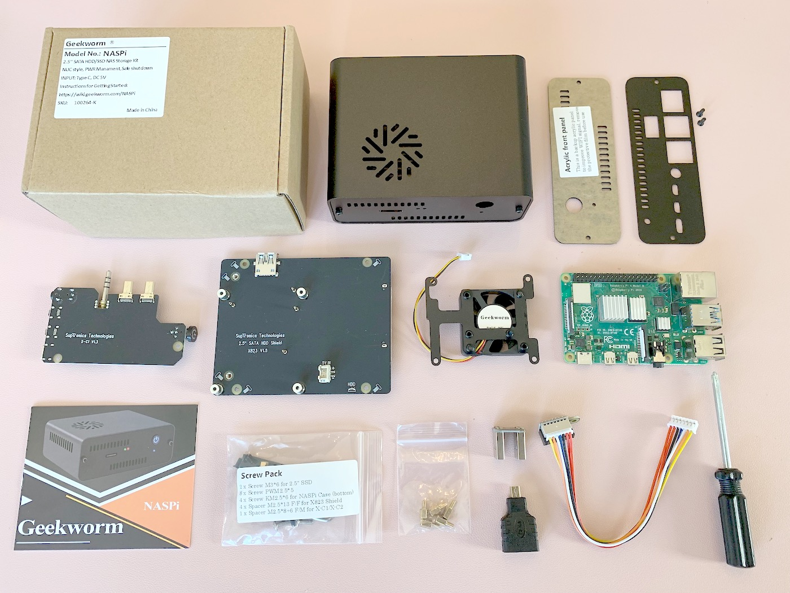 The three key components in the second row, from left to right, are
- X-C1 V1.3 adapter board provides power management, interface adaptation, and security shutdown functions
- X823 V1.5 shield board provides a 2.5-inch SSD/HDD storage function (UASP supported)
- 4010 PWM fan and metal fan bracket
The assembly process was done step-by-step mainly by referring to NASPi installation video on Youtube, and the steps are generalized as follows.
- Insert the SSD into the SATA III connector of X823, flip it to the other side, and fix it with screws.
- Install the Raspberry Pi 4B after fixing the spacers on this side, and place the 7-pin cable between the two
- Install the PWM fan on top of the Raspberry Pi 4B with the additional spacers
- Connect X-C1 and Raspberry Pi 4B, insert a 7-pin connector right to the X-C1 GPIO port and a 3-pin connector to the X-C1 FAN port
- Align and insert the 2x7-pin daughterboard to the GPIO port of the Raspberry Pi 4B and fix it with screws
- Plug in the USB 3.0 connector to connect the X823 USB 3.0 port to the corresponding Raspberry Pi 4B USB 3.0
Now the installation of the internal accessories has been completed, we have a view of this
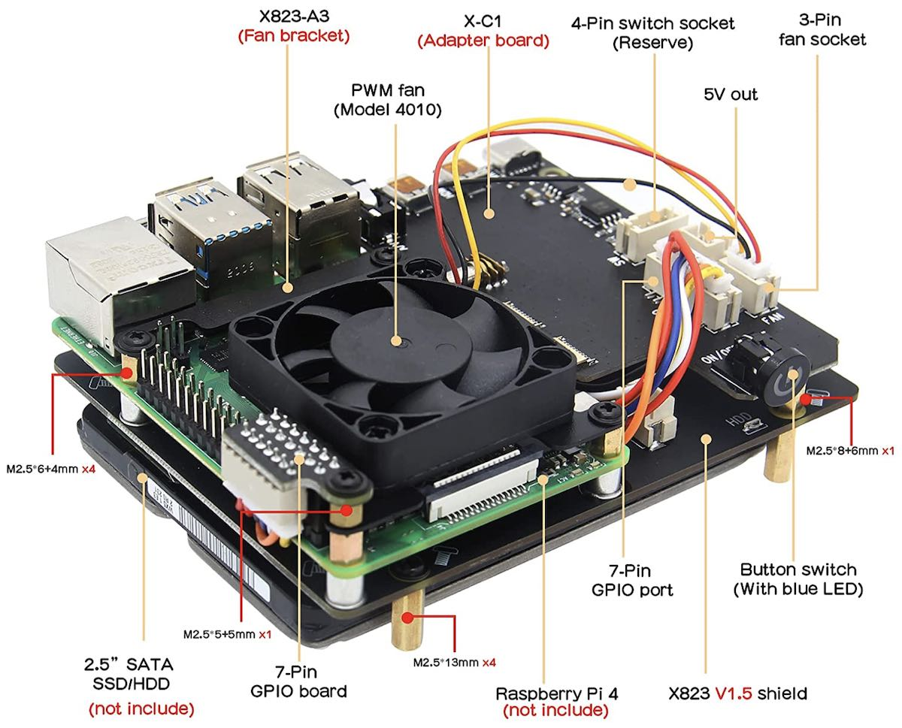
At this point, we added the USB-C power and pressed the front button to start the system, we could see the PWM fan started to spin. It was also observed that the fan spin rate was not constant, which demonstrated that the temperature controller PWM fan was working properly.
The front button switch with embedded blue LED decides the whole system's on/off state and can be tested below
- Press the switch after power-on, and the system starts
- Press and hold the switch for 1-2 seconds while running, then the system restarts
- Press and hold the switch for 3 seconds during operation to shut down the system safely.
- Press and hold the switch for 7-8 seconds during operation to force shutdown
Running the off command on the SSH connection can also trigger a safe shutdown. Be cautious that we should not use the Linux shutdown command, as that would not power down the X-C1 board.
After the button switch test, we now unplugged the USB 3.0 connector and inserted the entire module into the case. Next was to add the back panel and tighten the screws, then re-insert the USB 3.0 connector. This completed the whole NASPi storage kit assembly process. Below are the front and rear views of the final system provided by Geekworm (all interfaces and vents are marked).
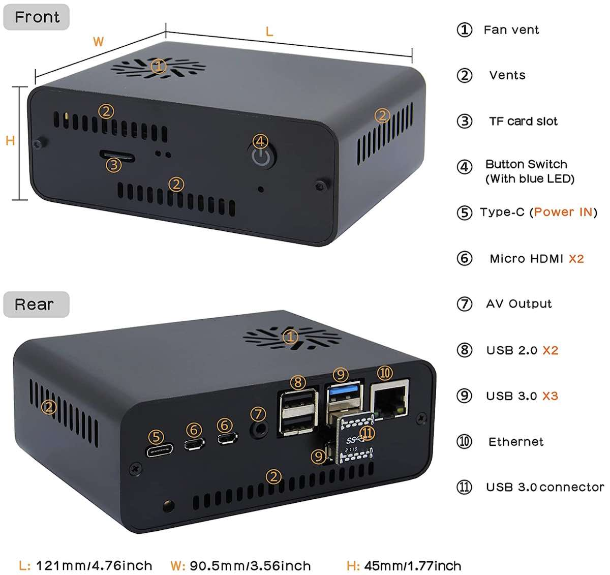
OMV Installation and Configuration
The third stage is for installing and configuring the key software package of the NAS system - PMV. The goal is to bring up the basic network file access service. Before restarting the NAS, we plugged a Seagate 2TB external HDD into the remaining USB 3.0 port. After booting, connected SSH to NASPi from macOS and performed the following process.
Install OMV Package
Installing OMV is as simple as running the following command line directly from a terminal with an SSH connection.
1 | wget -O - https://raw.githubusercontent.com/OpenMediaVault-Plugin-Developers/installScript/master/install | sudo bash |
Due to the large size of the entire OMV package, this installation process can take a long time. After the installation, the IP address of the system may change and you will need to reconnect to SSH at this time.
1 | (Reading database ... 51781 files and directories currently installed.) |
After reconnecting, you can use dpkg to view the OMV packages. As you can see, the latest version of OMV installed here is 6.0.5.
1 | pi@raspberrypi:~ $ dpkg -l | grep openme |
OMV Management UI
At this point OMV's workbench is live. Launching a browser on a macOS computer and typing in the IP address will open the beautiful login screen (click on the 🌍 icon in the upper right corner to select the user interface language):  After logging in with the default username and password shown above, you will see the Workbench screen. The first thing you should do at this point is to click the ⚙️ icon in the top right corner to bring up the settings menu and click "Change Password". You can also change the language here 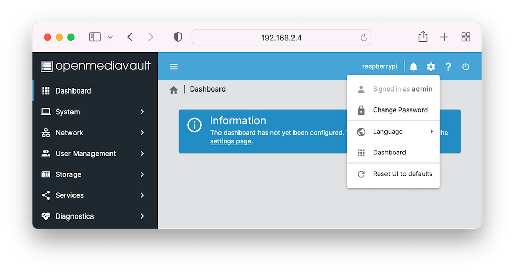 Clicking on "Dashboard" in the settings menu allows you to select the relevant components to be enabled. The menu on the left side provides task navigation for administrators and can be hidden when not needed. The complete OMV administration manual can be found in the online documentation
After logging in with the default username and password shown above, you will see the Workbench screen. The first thing you should do at this point is to click the ⚙️ icon in the top right corner to bring up the settings menu and click "Change Password". You can also change the language here 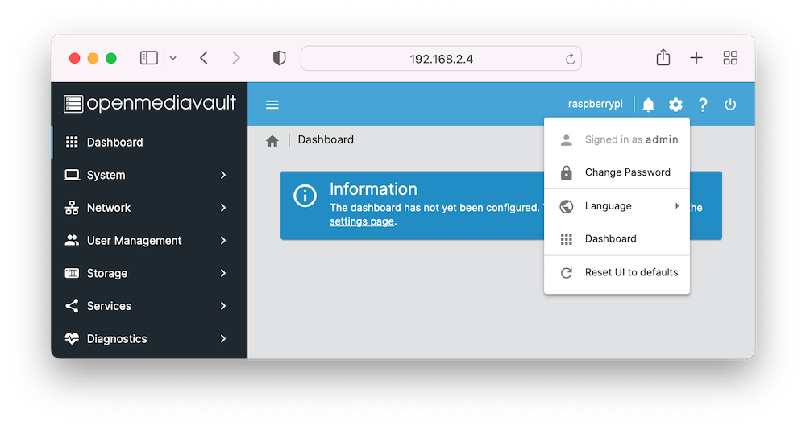 Clicking on "Dashboard" in the settings menu allows you to select the relevant components to be enabled. The menu on the left side provides task navigation for administrators and can be hidden when not needed. The complete OMV administration manual can be found in the online documentation
Configure File Services
Next is the key process for configuring the NAS, which consists of the following 5 steps.
Scan for mounted disk drives
Click Storage > Disks from the sidebar menu to enter the hard drive management page. If there is an external USB storage device just plugged in, you can click 🔍 here to scan it out. The scan results for this system are as follows. The internal Samsung 500GB SSD and external Seagate 2TB HDD are detected, and the 32GB microSD that contains the entire software system is listed at the top: 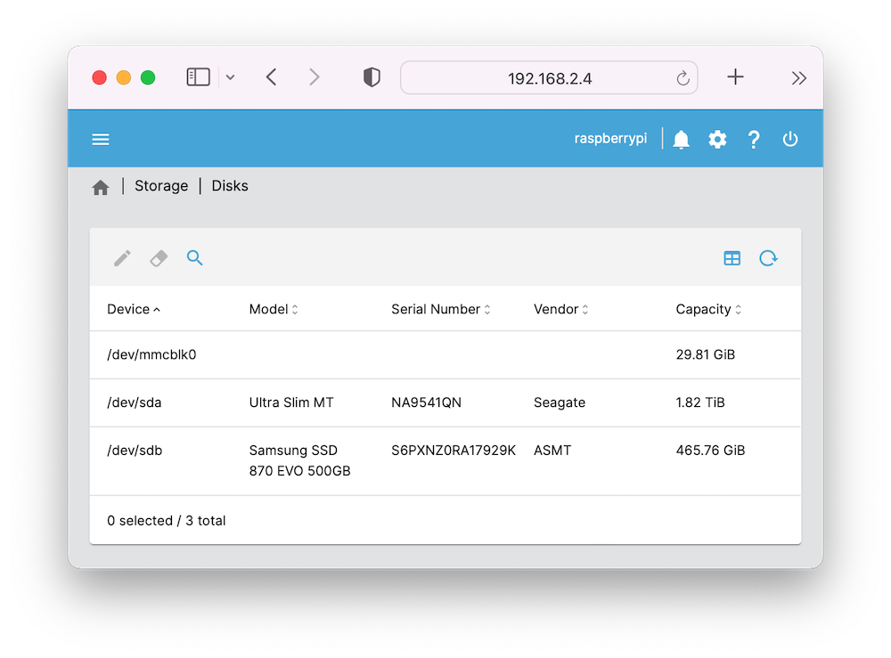
On the SSH terminal, we could see the information for the same set of mounted drivers
1
2
3pi@raspberrypi:~ $ df -h | grep disk
/dev/sdb2 466G 13G 454G 3% /srv/dev-disk-by-uuid-D0604B68604B547E
/dev/sda1 1.9T 131G 1.7T 7% /srv/dev-disk-by-uuid-DEB2474FB2472B7BMount disk drive file systems
Click Storage > File Systems from the sidebar menu to enter the file system management page. If the storage device does not have a file system yet, click ⨁ to Create or Mount the file system. OMV can create/mount ext4, ext3, JFS, and xfs file systems, but only mounts are supported for the NTFS file system. The following figure shows that OMV correctly mounts NTFS file systems for SSDs and HDDs: 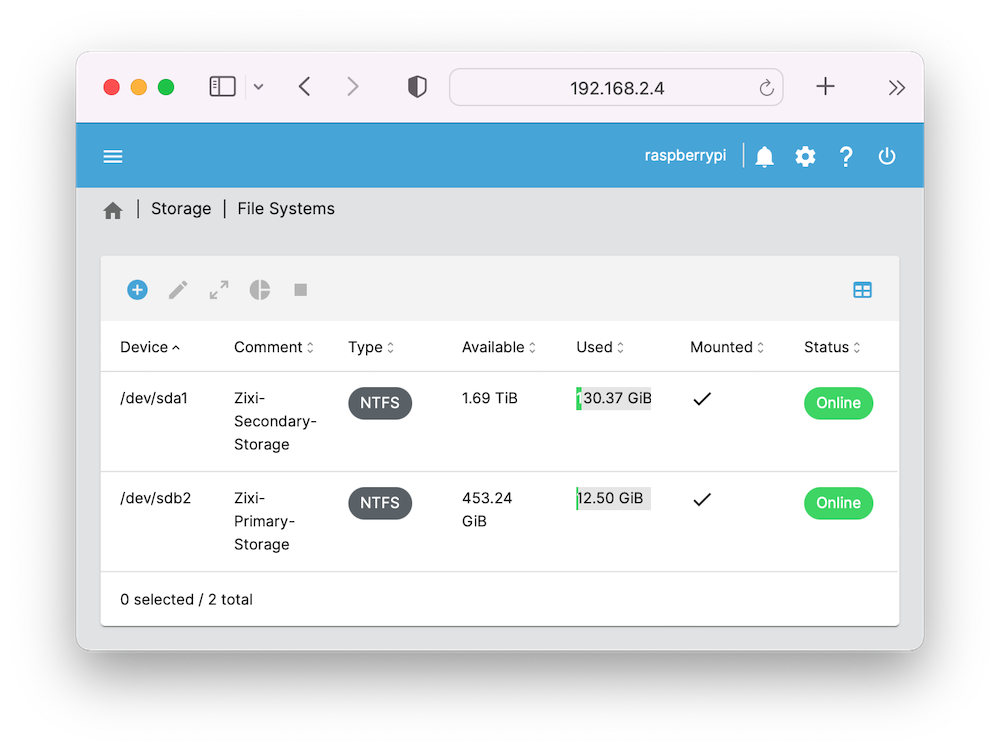
Set Shared Folders
From the sidebar menu, click Storage > File Systems to access the shared folder management page. Here, click ⨁ to create a shared folder. When creating it, specify the name, corresponding file system, and relative path, and you can also add comments. Select the created folder and click the pencil icon again to edit the related information. This system sets the relative paths of shared folders Zixi-Primary and Zixi-Secondary for SSD and HDD respectively 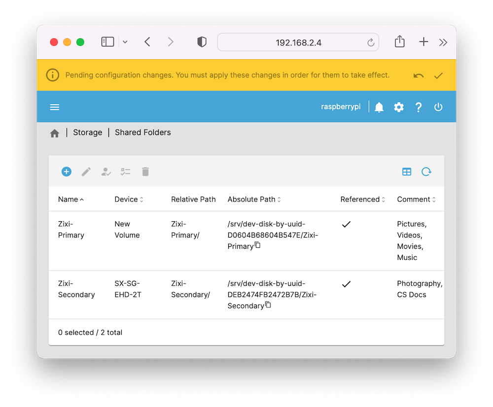 Notice the orange alert at the top of the figure above, which alerts the administrator that the configurations have changed and must click on the ✔️ icon to take effect.
Add shared folder access users
Click User Management > Users from the sidebar menu to enter the user management page. The system's default user pi has root privileges and cannot be used for file-sharing access due to security concerns. So you need to add a new user separately. On this page, click ⨁ to Create or Import user, only user name and password are required when creating a new user, others are optional. Once created, select this user and click the third folder+key icon (prompting "Shared folder privileges") to enter the following privileges settings page 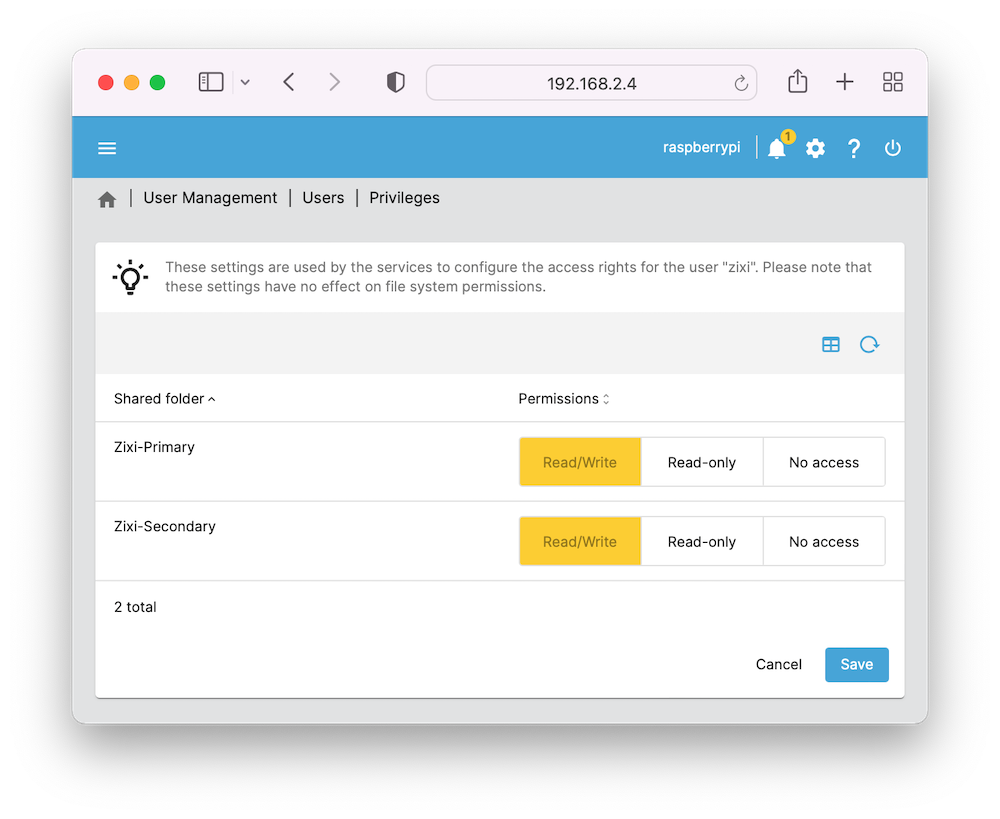 As shown in the figure, for this new user zixi, the administrator can set the read and write access permissions for each shared folder.
Start file share services
If you expand the "Services" item in the navigation menu, you can see that OMV manages five services: FTP, NFS, Rsync, SMB/CIFS, and SSH. SSH is enabled at the beginning of the system OS image preparation. NFS and SMB/CIFS are the most common network file-sharing protocols, and both are supported by macOS. Take SMB/CIFS as an example here. Click Services > SMB/CIFS from the sidebar menu to enter the management page. The page contains two buttons: Settings and Shares. Click "Settings" first to activate the SMB/CIFS service and configure the workgroup name on the new page, other options can be left as default. After saving, it returns to the SMB/CIFS administration page. Then enter "Shares", click ⨁ to Create shared folders Zixi-Primary and Zixi-Secondary on the new page then save. After that, click the ✔️ icon in the orange warning bar to make all configuration updates take effect, and you will end up with the following result 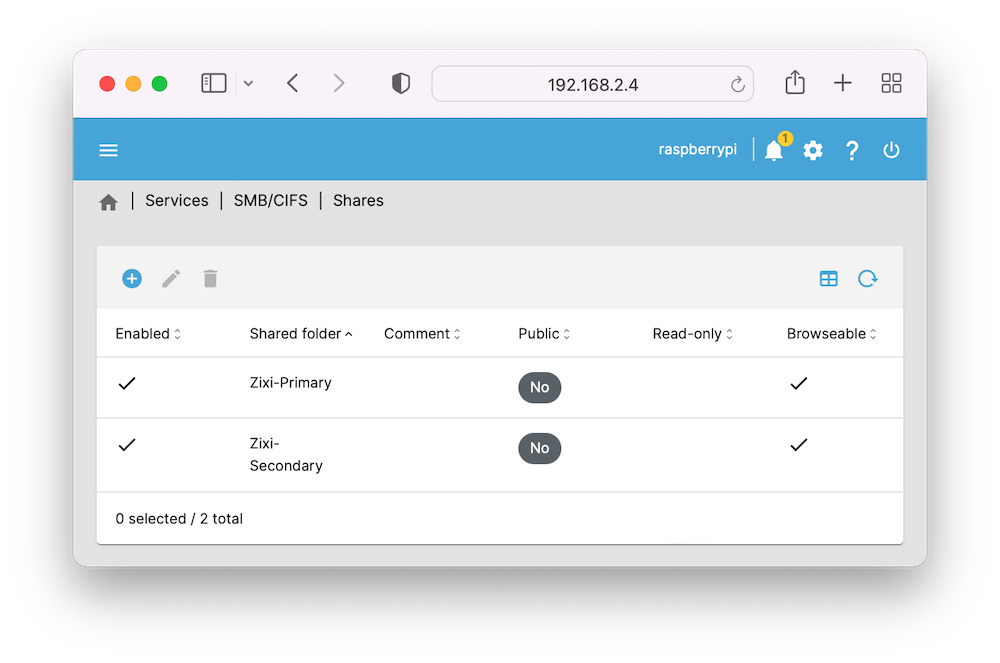
Now our Raspberry Pi NAS system is ready for file sharing and the SMB/CIFS service is started. After checking the relevant components to turn on, our dashboard live monitoring looks like this 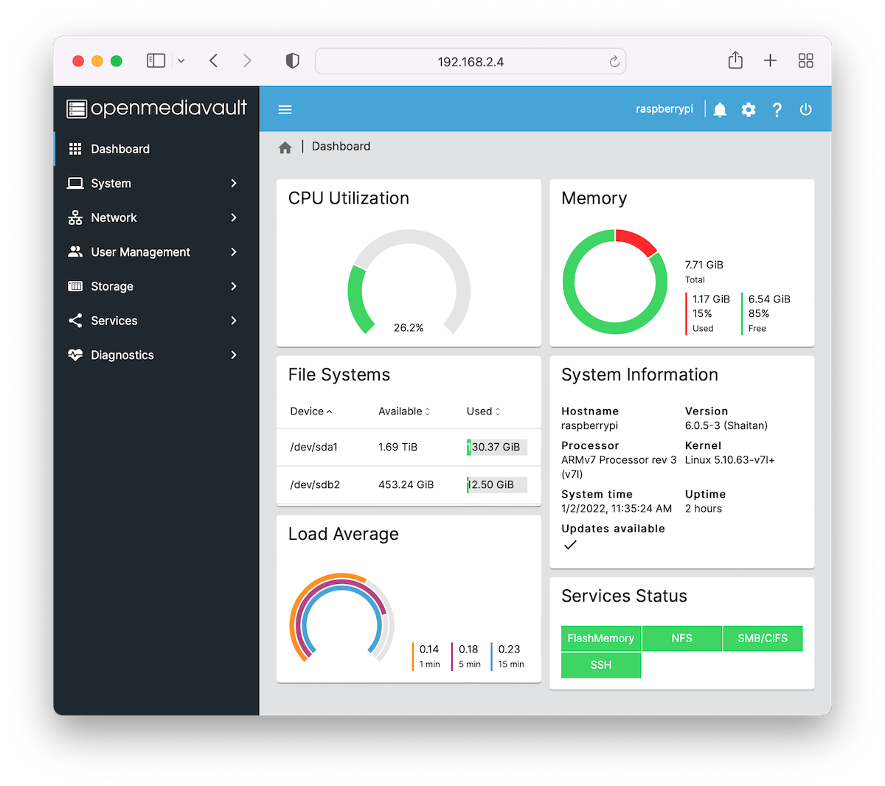
Set Up Client Device
Once the server side is ready, we need to add the network share folder on the client side as follows.
- Windows PC client
- Open File Explore, click “This PC”
- Right-click on the blank area at the right pane, select "Add a network location” on the popup menu
- Enter “\\<IP-address>\
” in the “Internet or network address" input box - Enter username and password when prompted
- MacBook client (screenshot below)
- Open Finder, click the menu item Go
- Click “Connect to Server...”
- Enter URL “smb://<IP-address>/
”, then click Connect - Enter username and password when prompted
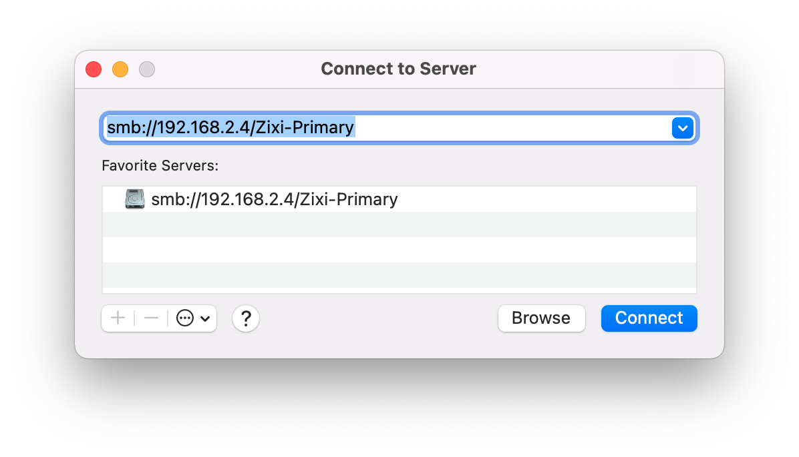
Once the client side is set up, users can perform various operations on the network share folder as if it were a local directory, such as previewing, creating new, opening or copying files, creating new subdirectories, or deleting existing subdirectories.
Plex Installation and Configuration
The last stage is to install and configure the Plex Media Server, and then start a network streaming service.
Install Media Server
The process of installing Plex Media Server requires HTTPS transport support, so we must first install the https-transport package. SSH to our Raspberry Pi NAS and execute the install command
1 | sudo apt-get install apt-transport-https |
Next add the Plex repository to the system, which requires downloading the Plex sign key first. Here are the related commands and run logs
1 | pi@raspberrypi:~ $ curl https://downloads.plex.tv/plex-keys/PlexSign.key | sudo apt-key add - |
Use the same apt-key command to check the newly added Plex sign key
1 | pi@raspberrypi:~ $ apt-key list |
You can see that Plex uses 4096-bit RSA keys. For the warning message "apt-key is deprecated..." in the above log, you can ignore it for now. Go to read some discussion on the askubuntu forum if you are interested.
The next step is to add the Plex repository to the system repository list, and then update the packages 1
2echo deb https://downloads.plex.tv/repo/deb public main | sudo tee /etc/apt/sources.list.d/plexmediaserver.list
sudo apt-get update
1 | pi@raspberrypi:~ $ sudo apt install plexmediaserver |
The log shows a question is asked about the Plex media server list (plexmediaserver.list), just choose the default N. When we see "Installation successful", we know that the installation was successful. At this point, the Plex streaming service is up and running. Invoking the Nmap scan again from the macOS side, we find that TCP port 32400 for Plex service is open.
1 | ❯ nmap -p1-65535 192.168.2.4 | grep open |
Configure Media Server
The configuration of the Plex Media Server has been done on the web GUI. Launch a browser on the macOS computer and type in the URL http://<IP-address>:32400/web, now we can see the following page if no surprise  We can sign in with a Google, Facebook, or Apple account, or we can enter an email to create a new account. Follow the instructions on the page step by step, no need for any payment, soon we reach the Server Setup page. Here we can configure the server name and add libraries. Normally we don't need to access our home media server from outside, so remember to uncheck the "Allow me to access my media outside my home" box in this step. To add a library, first select the type of library (movies, TV episodes, music, photos, etc.), then click the "BROWSE FOR MEDIA FOLDER" button to browse and select the corresponding folder. Once the library is added, the included media files will immediately appear in the local service directory, as shown in the screenshot below 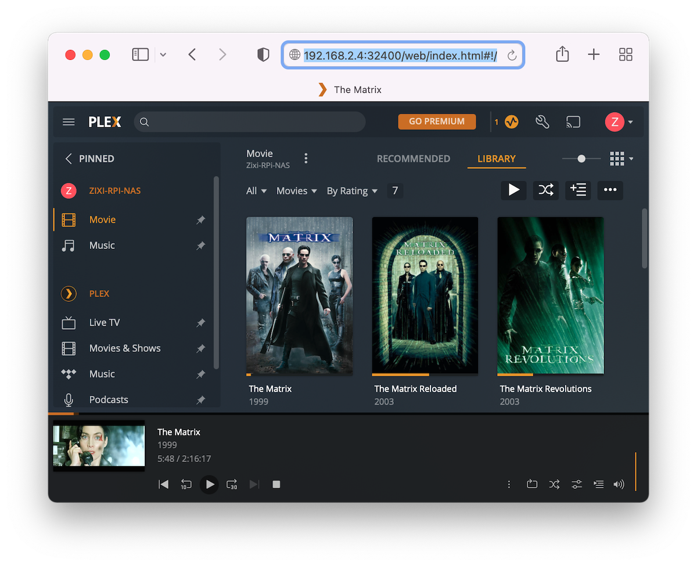 Here we have a local server named ZIXI-RPI-NAS for our Raspberry Pi NAS, the movie directory in the library shows The Matrix trilogy and is playing the first one The Matrix. Move your mouse over the server name and ➕ icon will appear to the right, click on it to continue adding new media libraries.
We can sign in with a Google, Facebook, or Apple account, or we can enter an email to create a new account. Follow the instructions on the page step by step, no need for any payment, soon we reach the Server Setup page. Here we can configure the server name and add libraries. Normally we don't need to access our home media server from outside, so remember to uncheck the "Allow me to access my media outside my home" box in this step. To add a library, first select the type of library (movies, TV episodes, music, photos, etc.), then click the "BROWSE FOR MEDIA FOLDER" button to browse and select the corresponding folder. Once the library is added, the included media files will immediately appear in the local service directory, as shown in the screenshot below 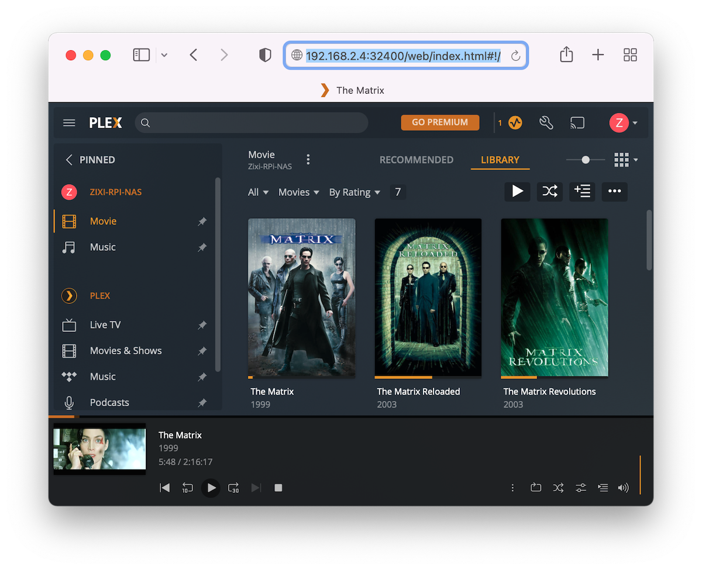 Here we have a local server named ZIXI-RPI-NAS for our Raspberry Pi NAS, the movie directory in the library shows The Matrix trilogy and is playing the first one The Matrix. Move your mouse over the server name and ➕ icon will appear to the right, click on it to continue adding new media libraries.
Once the Plex Media Server is configured, we can open a browser from any device on our home network to do streaming on-demand, without the need to download additional applications. The whole experience is just like our own proprietary home Netflix service. This is awesome!
Performance Review
By connecting a macOS laptop to one of the remaining ports of the TL-SG105, we could perform some simple same-subnet tests to evaluate the performance of this NAS system fully.
System Stress Test
Referring to Geekworm NASPi Stress Test Wiki page, we executed the following command over SSH connection, which cloned the test script from GitHub and ran the stress test:
1 | git clone https://github.com/geekworm-com/rpi-cpu-stress |
Simultaneously we established a second SSH session and ran htop to monitor system status. The screenshot below was taken while close to the 5-minute mark (left is the htop real-time display, and right is the stress test output)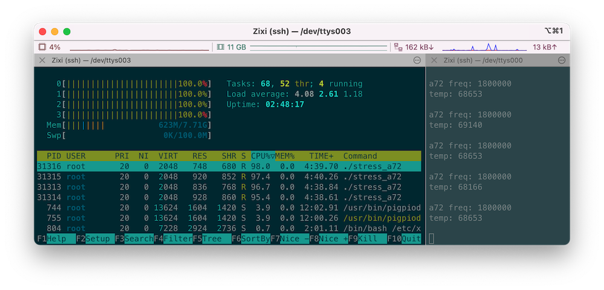 Dividing the temp value on the right side by 1000 gave the CPU temperature. All 4 CPU cores reached 100% full load during the test, while the maximum temperature did not exceed 70°C. At this moment, there was no obvious heat sensation when touching the case. Typing ctrl-c to stop the stress test, and then executing the temperature measurement script again
1 | pi@raspberrypi:~ $ ./pi-temp.sh |
The system temperature returned to a low range value. This test result assures the system meets the design goal.
File Transfer Speed Test
The file transfer speed can be roughly measured with the secure remote copy tool SCP. First, create a 1GB size file by running the mkfile command on the macOS client, then copy it to the user directory of the remote NAS system with the scp command
1 | ❯ mkfile 1G test-nas.dmg |
After the copy was done, it would print the time spent and the deduced speed. Running the command with the source and the destination reversed would give us the speed of receiving a file from the NAS system.
1 | ❯ scp pi@192.168.2.4:/home/pi/test-nas.dmg test-nas-rx.dmg |
Repeated 3 times and got the results listed below
| Transfor Type | Server Operation | Time (s) | Speed (MB/s) |
|---|---|---|---|
| Send | Write | 53 | 19.2 |
| Send | Write | 45 | 22.5 |
| Send | Write | 50 | 20.4 |
| Receive | Read | 15 | 65.7 |
| Receive | Read | 16 | 60.3 |
| Receive | Read | 15 | 66.3 |
As can be seen, the speed of remote write is around 20MB/s, while the speed of remote file read can reach over 60MB/s. Considering that scp-related encryption and decryption are implemented in software on general-purpose Raspberry Pi systems, this result should be considered passable.
Disk Access Speed Test
The real test of the NAS's performance is the network drive read/write speed test. For this, we downloaded the AmorphousDiskMark app from Apple's App Store. This is an easy and efficient drive speed test that measures the read/write performance of a storage device in terms of MB/s and IOPS (input/output operations per second). It has four types of tests:
- sequential read/write, 1MB block, queue depth 8
- sequential read/write, 1MB block, queue depth 1
- random read/write, 4KB block, queue depth 64
- random read/write, 4KB block, queue depth 1
The above queue depths are the default values, but other values are also available. In addition, users can also modify the test file size and duration.
Run the application on the macOS client and select the remote SMB folders Zixi-Primary (Samsung SSD) and Zixi-Secondary (Seagate HDD) respectively at the top, then click the All button in the upper left corner to start the NAS drive speed test process. A side-by-side comparison of the two test results is shown below
This gives a few observations:
- Reads are faster than writes for NAS drives, and the difference under random access is huge.
- SSD outperforms HDD for both sequential and random accesses.
- Large queue depth speeds up reads, especially for random accesses, but there is little impact on writes.
- For both SSDs and HDDs, sequential reads/writes are significantly more efficient than random reads/writes.
- For both SSDs and HDDs, sequential reads/writes reach their highest speeds at large queue depths.
These are not surprising and are consistent with the test results on macOS laptops with direct external SSDs and HDDs, only with the lower numbers. With this NAS system, both the SSD and HDD are connected via the USB 3.0 interface. USB 3.0 supports transfer speeds of up to 5Gbit/s, so the performance bottleneck of the system is the network interface bandwidth and processor power.
That being said, for both SSDs and HDDs, the transfer speeds have been more than 900Mbit/s at 1MB sequential read and queue depth 8, close to the upper bandwidth limit of the Gigabit Ethernet interface. This read speed can support a single 1080p60 video stream at a frame rate of 60fps or 2 parallel 1080i50 video streams at a frame rate of 25fps, which is sufficient for home streaming services. In another media service test, the NAS system performs satisfactorily with three computers playing HD video on demand and one phone playing MP3 music without any lag.
Project Summary
This completes our Raspberry Pi home NAS project. Now we can move our NAS to a more permanent location to provide network file and streaming services for the whole family.
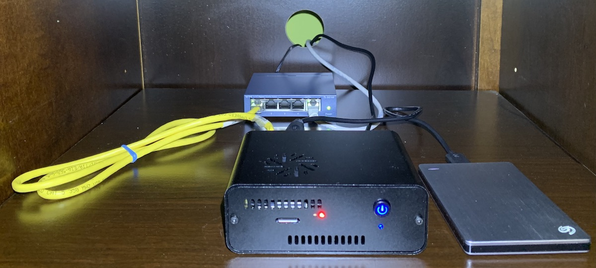
Economically, our home NAS has the cost summarized in the table below (excluding SSD/HDD)
| Devices | Functions | Cost（$） |
|---|---|---|
| Raspberry Pi 4B 2/4/8GB RAM | Primary hardware system | 45/55/75 |
| Samsung 32GB EVO+ Class-10 Micro SDHC | OS storage | 10 |
| Geekworm NASPi Raspberry Pi 4B NAS Storage Kit | Case, extending board and PWM fan | 60 |
| Geekworm 20W 5V 4A USB-C Power Adaptor | Power supply | 15 |
| TP-Link TL-SG105 5-Port Gigabit Ethernet Switch | Desktop switch | 15 |
Even with the choice of 8GB RAM Raspberry Pi 4B, the whole cost is only $175, a little more than half of the price of the low-end brand NAS sold in the market. Unless there are a lot of client devices that need streaming services, the memory consumption is usually under 2GB, so the 2GB Raspberry Pi 4B should be able to work in most home scenarios. That cuts the cost down to $145, less than half the MSRP.
On the other hand, this DIY project was a very good exercise of hands-on practice, helping us gain valuable intuitive experience in building network connections, configuring system hardware and software, and tuning and testing application layer services. To sum up, the home NAS system built with Raspberry Pi 4B and OMV, combined with a Plex media server, provides a cost-effective solution for file backup and streaming media services in the home network.
Appendix: List of related devices and Amazon links
Disclosure: This blog site is reader-supported. When you buy through the affiliate links below, as an Amazon Associate, I earn a tiny commission from qualifying purchases. Thank you.
CanaKit Raspberry Pi 4B 8GB RAM + 128GB MicroSD Extrem Kit https://amzn.to/3DUeDfm
Samsung 32GB EVO+ Class 10 Micro SDHC with Adapter https://amzn.to/3FLkTb7
Geekworm NASPi 2.5" SATA HDD/SSD Raspberry Pi 4B NAS Storage Kit https://amzn.to/3m5djAi
Geekworm Raspberry Pi 4 20W 5V 4A USB-C Power Adaptor https://amzn.to/3m1EXOf
TP-Link TL-SG105 5-Port Gigabit Ethernet Switch https://amzn.to/3pRkBsi
Samsung 870 EVO 500GB 2.5" SATA III Internal SSD https://amzn.to/3DPKnCl
Seagate Portable 2TB USB 3.0 External HDD https://amzn.to/3EYegl4
Synology 2-Bay 2GB NAS DiskStation DS220+ https://amzn.to/3Jp5qjd
Synology 5-Bay 8GB NAS DiskStation DS1520+ https://amzn.to/3qniQDm